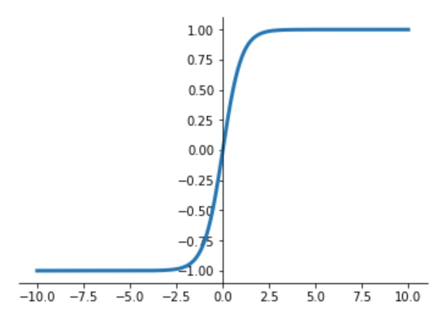

Recurrent Neural Networks: Simple RNNs
Oliver Zeigermann / @DJCordhose
https://djcordhose.github.io/ai/2018_rnn.htmlText and sequences are special

Simple RNNs
Recurrent Neural Networks
Motivation
Traditional Networks have no memory of previous events
Number to Number enconding needs to factor in carry
Repetition Activation Functions

Sigmoid, floating from 0 to 1

https://notebooks.azure.com/djcordhose/libraries/buch/html/kap7-iris.ipynb
Tangens Hyperbolicus, floating from -1 to 1